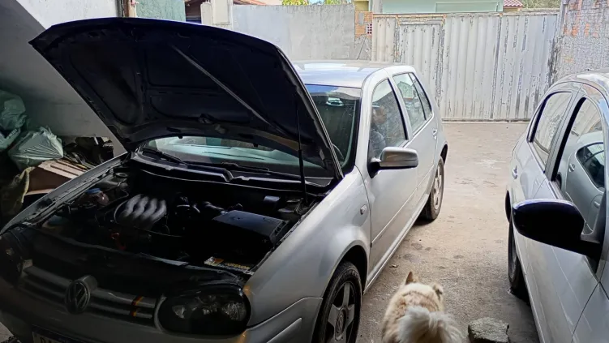
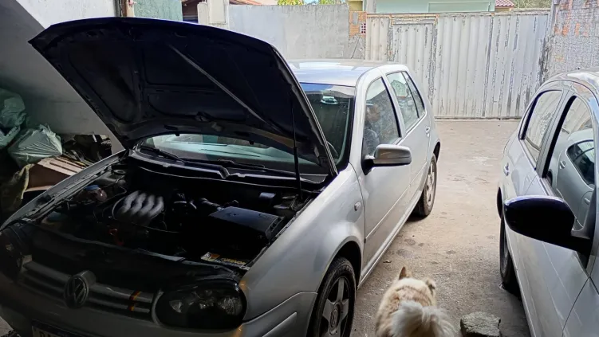

Suspensão e Manutenção Básica
Qualidade, confiança e o melhor atendimento para o seu carro.
Fale Conosco no WhatsAppNossos Serviços Especializados
Suspensão e Direção
- Kit de amortecedores (dianteiro e traseiro)
- Troca de buchas de balanças e pivôs
- Troca de balança completa
- Troca de barras axiais e terminais de direção
- Troca de caixa de direção (hidráulica e mecânica)
- Bucha do eixo traseiro
Freios e Transmissão
- Troca de disco e pastilha (dianteiro)
- Troca de disco, tambor ou lona (traseiro)
- Manutenção em Homocinética
- Manutenção em Semi eixo
- Manutenção em Triseta
- Manutenção básica de motores
Nosso Local de Trabalho
 



Entre em Contato
Estamos prontos para atender você!
- WhatsApp: (48) 99640-0410
- Horário: Segunda a Sexta, das 08h às 18h
- Endereço: Rua Manuel Cesário Coelho, Nº 591 - São João do Rio Vermelho - SC